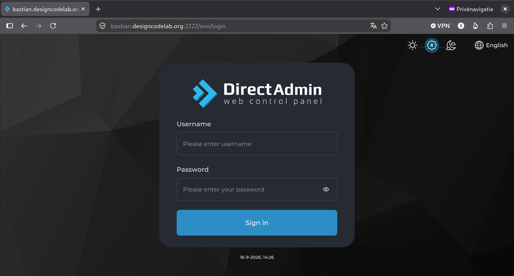
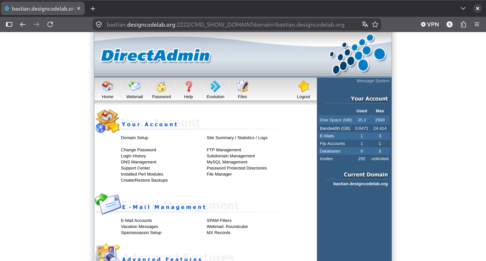
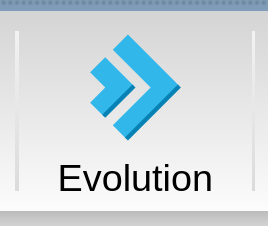
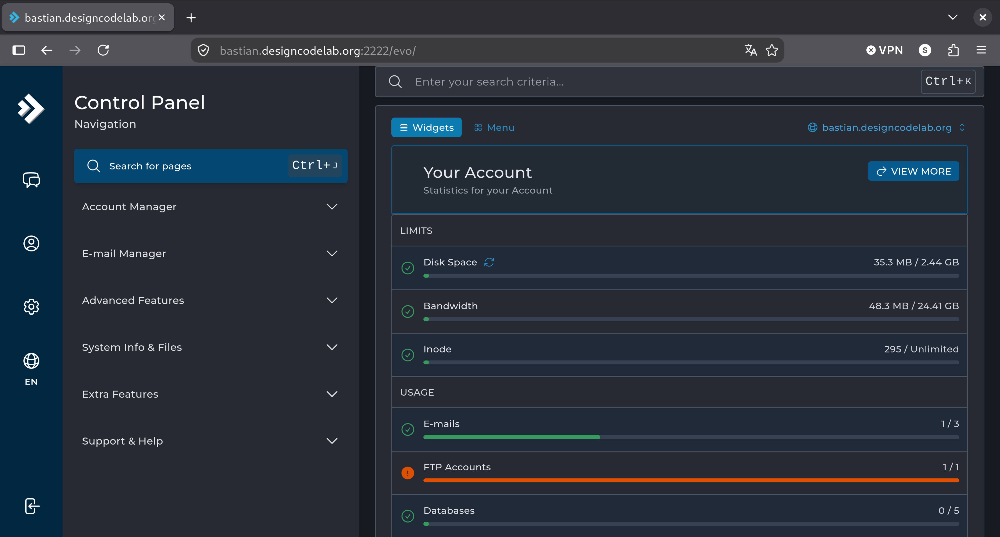
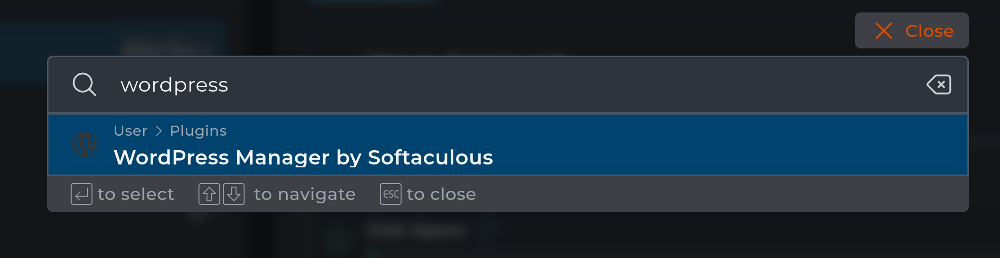
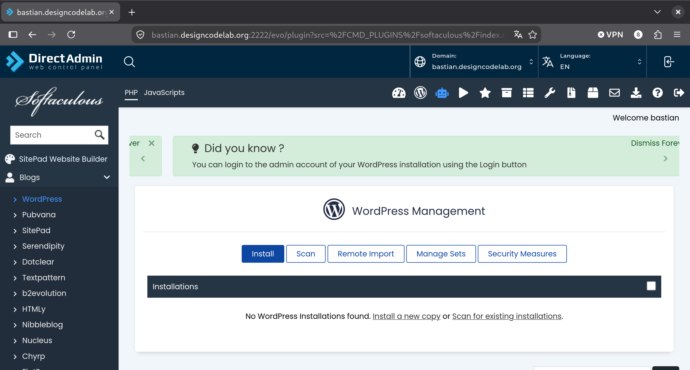
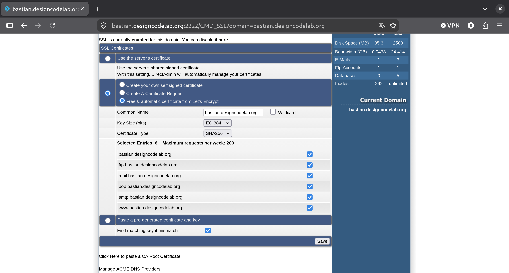
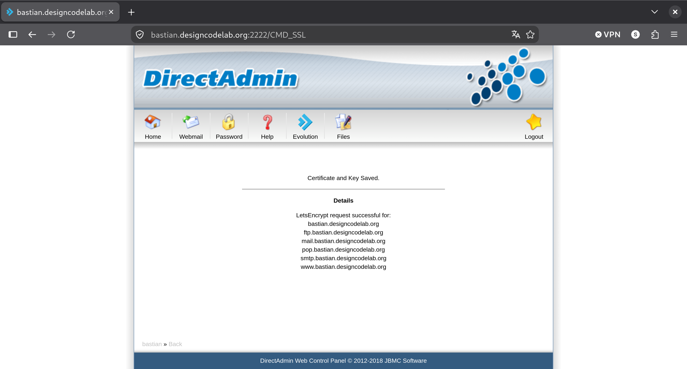

Steven Speek
Ga met je browser naar
<mijn naam>.designcodelab.org:2222/


Klik op


Type CTRL+J
En type Wordpress

Druk op ENTER

Maak hier een bladwijzer van met CTRL+D
Om WordPress veilig te kunnen draaien heb je een SSL-certificaat nodig
<mijn naam>.designcodelab.org:2222/
Klik op SSL-Certificates onder
Advanced Features


Je beheert hier
Posts zijn dynamisch
Pages zijn statisch